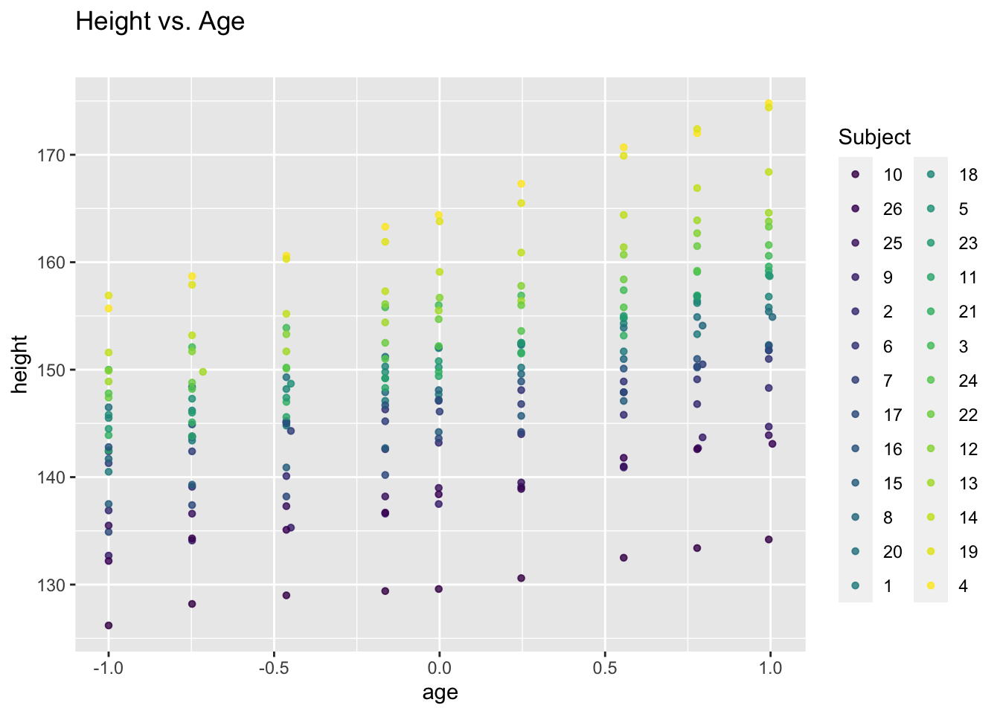
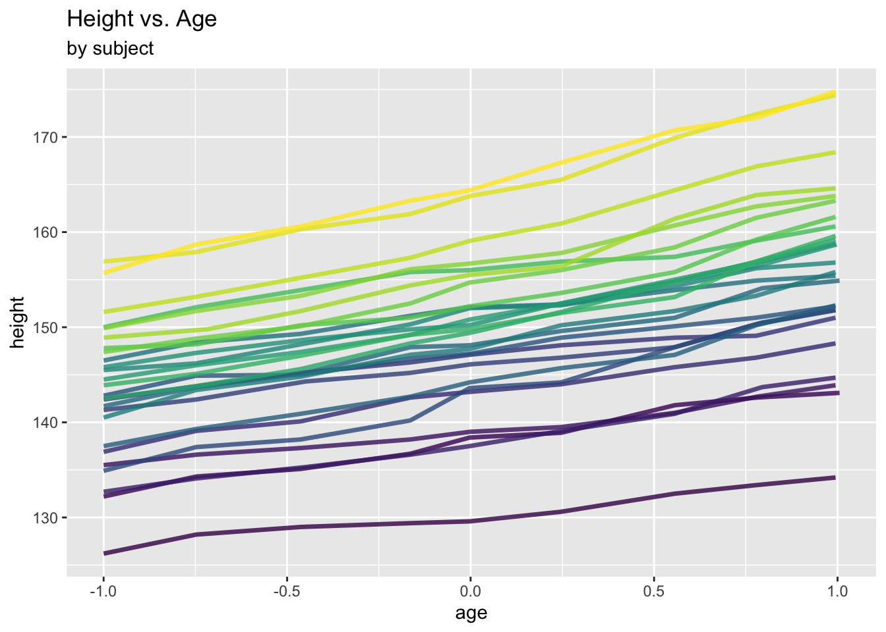
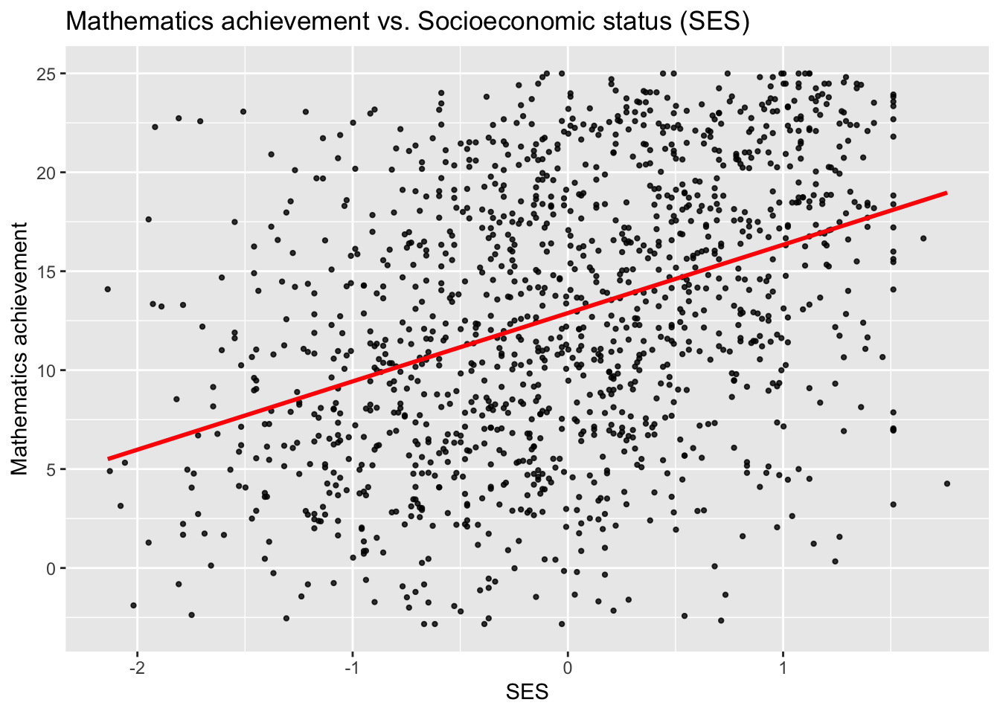
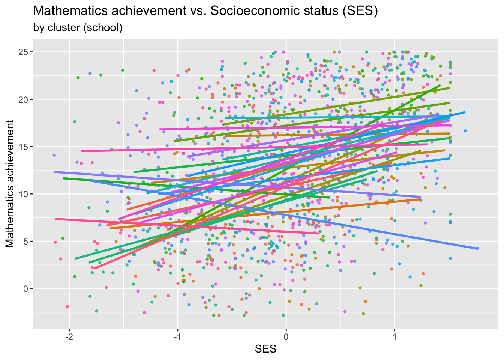
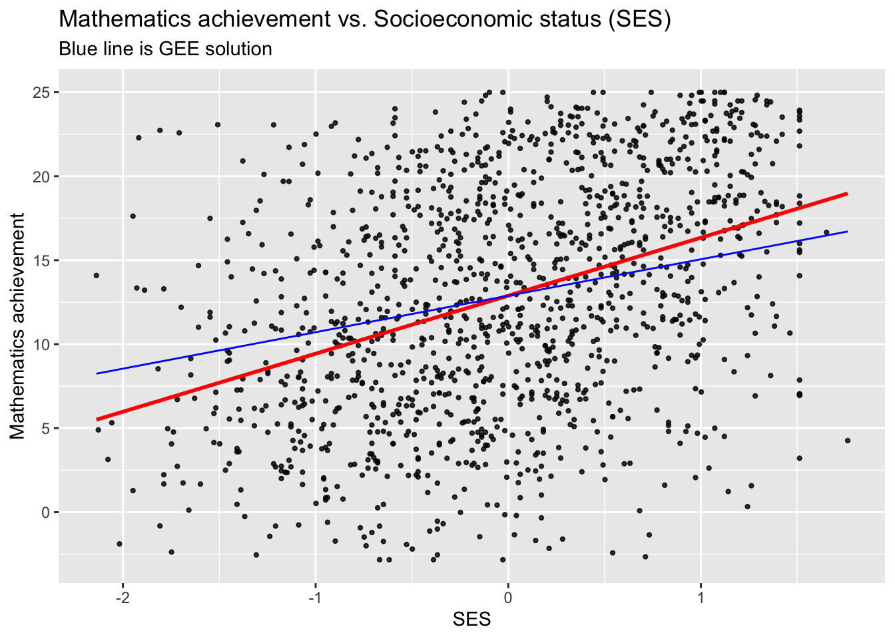

Chapter 6 Marginal models
6.1 Repeated measures data
6.1.1 Example: Oxford boys data
We consider a data set giving repeated measures of height (cm) of 26 boys over eight time points (i.e. total sample size \(N=234\)).
## Loading required package: nlme## Loading required package: ggplot2ggplot(data = Oxboys, aes(x = age, y = height, col = Subject)) +
geom_point(size = 1.2, alpha = .8) +
labs(title = "Height vs. Age", subtitle = "")
Different look at the data:
ggplot(data = Oxboys, aes(x = age, y = height, col = Subject)) +
geom_line(linewidth = 1.2, alpha = .8) +
labs(title = "Height vs. Age", subtitle = "by subject") +
theme(legend.position = "none")
Clearly, there is within-subject correlation: Measures from one subject are more similar to each other than those from different subjects.
This is a special type of repeated measures data which is commonly referred to as longitudinal data: Repeated measures on certain individuals over time.
6.1.2 Example: Mathematics achievement data
The data used here represent Mathematics achievement scores of a subsample of subjects from the 1982 High School and Beyond Survey. The full dataset can be found within the package merTools.
For each of 30 schools, we have pupil-level data on Mathematics achievement and a few covariates including socioeconomic status.
## schid minority female ses mathach size schtype meanses
## 1 1224 0 1 -1.528 5.876 842 0 -0.428
## 2 1224 0 1 -0.588 19.708 842 0 -0.428
## 3 1224 0 0 -0.528 20.349 842 0 -0.428
## 4 1224 0 0 -0.668 8.781 842 0 -0.428
## 5 1224 0 0 -0.158 17.898 842 0 -0.428
## 6 1224 0 0 0.022 4.583 842 0 -0.428## [1] 1329 8## [1] 30ggplot(data = sub_hsb, aes(x = ses, y = mathach)) +
geom_point(size = 0.8, alpha = .8) +
geom_smooth(method = "lm", se = FALSE, col = "Red")+
ggtitle("Mathematics achievement vs. Socioeconomic status (SES)") +
xlab("SES") +
ylab("Mathematics achievement")## `geom_smooth()` using formula = 'y ~ x'
ggplot(data = sub_hsb, aes(x = ses, y = mathach, colour = school.id)) +
geom_point(size = 0.8, alpha = .8) +
geom_smooth(method="lm", se=FALSE) +
ggtitle("Mathematics achievement vs. Socioeconomic status (SES)",
subtitle ="by cluster (school)") +
xlab("SES") +
ylab("Mathematics achievement") +
theme(legend.position = "none")
One will suspect from these plots that there is within-school-correlation: Pupils from one school tend tend to be more similar to each other than to pupils from different schools.
This type of repeated measures data is commonly referred to as “clustered” data, with clusters here referring to schools. Note that the term clustered is here just to be interpreted in the sense of “items of increased similarity due to a structural reason”, but it has nothing to do with “clustering” such as for instance k-means.
Fitting naïve LMs or GLMs to repeated measures data may or may not result in correct inferences for \(\boldsymbol{\beta}\), but in any case the standard errors \(SE(\hat{\beta}_j)\) will be incorrect. Fortunately, longitudinal and clustered data can be dealt with in the same framework.
6.2 The marginal model for repeated measures
Denote \(y_{ij}\), \(i=1, \ldots,n\), \(j=1, \ldots, n_i\), the \(j\)th repeated measurement for cluster/individual \(i\) (we will just speak of “cluster” henceforth), so that the total sample size is \(N=\sum_{i=1}^n n_i\). Denote further the vector of all responses (repeated messurements) belonging to the \(i\)th cluster by \[ \boldsymbol{Y}_i=\left(\begin{array}{c} y_{i1}\\ \vdots \\ y_{in_i}\end{array}\right), \] with associated covariates \[ \boldsymbol{X}_i= \left(\begin{array}{c} \boldsymbol{x}_{i1}^T \\ \vdots \\\boldsymbol{x}_{in_i}^T\end{array} \right) = \left(\begin{array}{ccc} x_{i11}& \ldots & x_{i1p}\\ \vdots & \ddots & \vdots \\ x_{in_i1} & \ldots & x_{in_ip} \end{array}\right). \]
A marginal model for \(y_{ij}\) has three components:
- the mean function (“correctly specified”) \[ \mu_{ij}=E(y_{ij})=h(\boldsymbol{\beta}^T \boldsymbol{x}_{ij}); \]
- the mean-variance relationship \[ \mbox{Var}(y_{ij})=\phi\mathcal{V}(\mu_{ij}); \]
- the association between the responses \[ \begin{aligned} \mbox{corr}(y_{ij}, y_{i'k}) &= 0 \,\, \mbox{ for all } \,\, i\not=i' \\ \mbox{corr}(y_{ij}, y_{ik}) &= r_{jk} (\boldsymbol\alpha), \end{aligned} \]
where \(r_{jk}(\cdot)\) is a known function indexed by \(j,k=1, \ldots n_i\), and \(\boldsymbol{\alpha}\) is a set of parameters.
The specified variances and correlations of the \(y_{ij}\) define uniquely the variance matrix \(\boldsymbol{\Sigma}_i\) of the elements of the \(i\)th cluster.
The most common settings of the function \(r_{jk}(\cdot)\) are as follows:
- “Independence”. Here \(r_{jk}(\boldsymbol{\alpha})\equiv r_{jk}\) does not depend on parameters, where \[ r_{jk} =\left\{\begin{array}{ll} 1 & j=k \\ 0 & j \not= k \end{array}\right. \]
- “Exchangeable” or “Equicorrelation”: For \(\boldsymbol{\alpha}=\alpha \in \mathbb{R}\), \[ r_{jk}(\alpha)= \left\{\begin{array}{ll} 1 & j=k \\ \alpha & j \not= k \end{array}\right. \]
- “Autoregressive model” (AR-1): For \(\boldsymbol{\alpha}=\alpha \in \mathbb{R}\), \[ r_{jk}(\alpha)= \alpha^{|j-k|} \]
- “Unstructured”: For \(n_i \equiv n^*\) for all \(i\), then with \(\boldsymbol{\alpha} \in \mathbb{R}^{n^* \times n^*}\), and \[ r_{jk}(\boldsymbol{\alpha})= \boldsymbol{\alpha}_{jk} \]
Some notes:
- There is no distributional assumption and there is no likelihood (Beyond the repeated measures context, this approach is also useful for complex modelling scenarios where building a likelihood may be very hard)
- \(\boldsymbol{\alpha}\) and \(\boldsymbol{\beta}\) are overall model parameters which do not depend on the cluster, \(i\).
- Marginal models provide “population-averaged” effects (unlike “conditional effects”, which provide effects conditional on each cluster \(i\), as we will see later for the mixed models).
What can we say about the matrices \(\boldsymbol{\Sigma}_i\)?
- Firstly, element-wise, combining the specifications of variances and correlations, we have \[ \mbox{Cov}(y_{ij}, y_{ik})= \phi r_{jk}(\boldsymbol{\alpha})\sqrt{\mathcal{V}(\mu_{ij})}\sqrt{\mathcal{V}(\mu_{ik})}. \]
- Globally, defining the working correlation matrix \[ R_i(\boldsymbol{\alpha})= (r_{jk}(\boldsymbol{\alpha}))_{1\le j \le n_i, 1 \le k \le n_i} \] and \[ C_i(\boldsymbol{\beta}, \phi)= \mbox{diag}(\phi \mathcal{V}(\mu_{ij})), \] one has \[ \boldsymbol{\Sigma}_i=C_i^{1/2}(\boldsymbol{\beta}, \phi)R_i(\boldsymbol{\alpha})C_i^{1/2}(\boldsymbol{\beta}, \phi) \] (clearly depends on \(\boldsymbol{\alpha}\), \(\boldsymbol{\beta}\), \(\phi\)).
6.2.1 Some examples
We exemplify the model structure through some of our recent data examples.
US Polio data (Section 5.3.1) \[ \begin{aligned} \mu_{ij}&=& \exp(\beta_0+\beta_1t_{ij})\\ \mathcal{V}(\mu_{ij})&=&\mu_{ij}\\ r_{jk}(\alpha)&=& \alpha^{|j-k|}\\ \mbox{Cov}(y_{ij}, y_{ik})&=&\phi \alpha^{|j-k|}\sqrt{\mu_{ij}\mu_{ik}} \end{aligned} \]
Oxford boys data (Section 6.1.1) \[ \begin{aligned} \mu_{ij}&=& \beta_0+\beta_1t_{ij}\\ \mathcal{V}(\mu_{ij})&=&1, \mbox{ where } \phi\equiv \sigma^2 \\ r_{jk}(\alpha)&=& \alpha^{|j-k|}\\ \mbox{Cov}(y_{ij}, y_{ik})&=& \sigma^2 \alpha^{|j-k|} \end{aligned} \]
Mathematics achievement data (Section 6.1.2) \[ \begin{aligned} \mu_{ij}&=& \beta_0+\beta_1\mbox{ses}_{ij}\\ \mathcal{V}(\mu_{ij})&=&1, \mbox{ where } \phi\equiv \sigma^2 \\ r_{jk}(\alpha)&=& \left\{ \begin{array}{lc}\alpha \,&\mbox{ if } j \not=k\\ 1 \,&\mbox{ if } j =k \end{array}\right.\\ \mbox{Cov}(y_{ij}, y_{ik})&=&\left\{ \begin{array}{lc}\alpha\sigma^2\,&\mbox{ if } j \not=k\\ \sigma^2 \,&\mbox{ if } j =k \end{array}\right. \end{aligned} \]
6.3 Estimation
All what is needed to estimate the model elaborated above is the (generalized version of the) Quasi-Score function \[ S(\boldsymbol{\beta})= \boldsymbol{X}^T\boldsymbol{D}\boldsymbol{\Sigma}^{-1}(\boldsymbol{Y}-\boldsymbol{\mu}) \] where
\[ \boldsymbol{Y}=\left(\begin{array}{c}\boldsymbol{Y}_1\\ \vdots\\ \boldsymbol{Y}_n\end{array}\right) \in \mathbb{R}^N,\,\,\, \boldsymbol{X} = \left(\begin{array}{c}\boldsymbol{X}_1\\ \vdots\\ \boldsymbol{X}_n\end{array}\right) \in \mathbb{R}^{N \times p},\,\,\, \boldsymbol{\mu} = \left(\begin{array}{c}\boldsymbol{\mu}_1\\ \vdots\\ \boldsymbol{\mu}_n\end{array}\right) \in \mathbb{R}^{N},\,\,\, \] where \(\boldsymbol{Y}_i\) and \(\boldsymbol{X}_i\) are as defined in Section 6.2, and \(\boldsymbol{\mu}_i= (\mu_{i1}, \ldots, \mu_{in_i})^T\), with \(\mu_{ij}=h(\boldsymbol\beta^T \boldsymbol{x}_{ij})\) and \(\boldsymbol{\beta} \in \mathbb{R}^p\). Furthermore,
\[ \boldsymbol{D} = \left(\begin{array}{cccc} h'(\boldsymbol\beta^T \boldsymbol{x}_{11}) & & & \\ & h'(\boldsymbol\beta^T \boldsymbol{x}_{12}) & & \\ & & \ddots & \\ & & & h'(\boldsymbol\beta^T \boldsymbol{x}_{nn_n}) \end{array}\right) \in \mathbb{R}^{N\times N},\, \boldsymbol\Sigma = \left(\begin{array}{cccc} \boldsymbol\Sigma_1 & & & \\ & \boldsymbol\Sigma_2 & & \\ & & \ddots & \\ & & & \boldsymbol\Sigma_n \end{array}\right) \in \mathbb{R}^{N \times N}, \]
noting that \(\boldsymbol\Sigma_i \in \mathbb{R}^{n_i \times n_i}\). Setting these to 0 yields the generalized estimating equation (GEE), \[ \boldsymbol{X}^T\boldsymbol{D}\boldsymbol{\Sigma}^{-1}(\boldsymbol{Y}-\boldsymbol{\mu})=0 \]
If \(\boldsymbol{\Sigma}\) is known (and correctly specified) up to a multiplicative function of \(\phi\) (but not depending on further parameters, \(\boldsymbol{\alpha}\)), then solve the GEE via Iteratively Weighted Least Squares (IWLS). That is, in complete analogy to the GLM estimation routines in Section 2.8, one has \[ \hat{\boldsymbol{\beta}}_{m+1}=(\boldsymbol{X}^T\boldsymbol{D}\boldsymbol{\Sigma}^{-1}\boldsymbol{D}\boldsymbol{X})^{-1}\boldsymbol{X}^T\boldsymbol{D}\boldsymbol{\Sigma}^{-1}\boldsymbol{D}\hat{\boldsymbol{Y}}_m \] where \(\hat{\boldsymbol{Y}}_m\) is a vector of working observations (which is also the same as in Section 2.8). If \(\boldsymbol{Y}\) is in fact multivariate normal and \(h(\cdot)\) the identity link (so \(\boldsymbol{D}=\boldsymbol{I}\)), then one iteration \((\boldsymbol{X}^T\boldsymbol{\Sigma}^{-1}\boldsymbol{X})^{-1}\boldsymbol{X}^T\boldsymbol{\Sigma}^{-1}\boldsymbol{Y}\) is sufficient. In either case, estimation of \(\boldsymbol{\beta}\) does not depend on \(\phi\), so \(\phi\) can be estimated separately after the last iteration.
Otherwise (if \(\boldsymbol{\Sigma}\) depends on unknown parameters \(\boldsymbol{\alpha}\)), cycle between:
- Given current \(\hat{\boldsymbol{\alpha}}\) and \(\hat{\phi}\), estimate \(\hat{\boldsymbol{\beta}}\) by (one iteration of) IWLS;
- Given current \(\hat{\boldsymbol{\beta}}\), estimate \(\hat{\boldsymbol{\alpha}}\) and \(\hat{\phi}\) [explicit formulas in Fahrmeir and Tutz (2001); page 125].
Variance estimation (under either scenario):
- “naïve”: \[ \mbox{Var}(\hat{\boldsymbol{\beta}})= (\boldsymbol{X}^T\boldsymbol{D}\boldsymbol{\Sigma}^{-1}\boldsymbol{D}\boldsymbol{X})^{-1}\equiv \boldsymbol{F}^{-1} \]
- “robust”: Sandwich variance estimator \[ \mbox{Var}_s(\hat{\boldsymbol{\beta}})= \boldsymbol{F}^{-1}\boldsymbol{V}\boldsymbol{F}^{-1} \] where \(\boldsymbol{V}=\boldsymbol{X}^T\boldsymbol{D}\boldsymbol{\Sigma}^{-1}\boldsymbol{S}\boldsymbol{\Sigma}^{-1}\boldsymbol{D}\boldsymbol{X}\), and \(\boldsymbol{S}\) is the so-called “true” variance matrix estimated as \[ \boldsymbol{S}= \left(\begin{array}{ccc}\boldsymbol{S}_1 &&\\ & \ddots & \\ && \boldsymbol{S}_n \end{array}\right) \in \mathbb{R}^{N \times N}. \] with \(\boldsymbol{S}_i=(\boldsymbol{Y}_i-\hat{\boldsymbol{\mu}}_i)(\boldsymbol{Y}_i-\hat{\boldsymbol{\mu}}_i)^T\).
Theoretical properties [Fahrmeir and Tutz (2001); page 126/127]:
Under some regularity conditions, \(\hat{\boldsymbol{\beta}}\) is consistent (i.e. \(\hat{\boldsymbol{\beta}} \longrightarrow \boldsymbol{\beta}\) for \(N \longrightarrow \infty\)) and asymptotically normal, \[ \hat{\boldsymbol{\beta}} \sim \mathcal{N}(\boldsymbol{\beta}, \boldsymbol{F}^{-1}\boldsymbol{V}\boldsymbol{F}^{-1} ) \] even if the specification of \(\boldsymbol{\Sigma}\) is wrong. Correct specification of \(\boldsymbol{\mu}\) is therefore more important than that of \(\boldsymbol{\Sigma}\).
6.3.1 Example
GEE for Mathematics achievement data:
## Beginning Cgee S-function, @(#) geeformula.q 4.13 98/01/27## running glm to get initial regression estimate## (Intercept) ses
## 12.886358 3.453019##
## GEE: GENERALIZED LINEAR MODELS FOR DEPENDENT DATA
## gee S-function, version 4.13 modified 98/01/27 (1998)
##
## Model:
## Link: Identity
## Variance to Mean Relation: Gaussian
## Correlation Structure: Exchangeable
##
## Call:
## gee(formula = mathach ~ ses, id = school.id, data = sub_hsb,
## corstr = "exchangeable")
##
## Number of observations : 1329
##
## Maximum cluster size : 67
##
##
## Coefficients:
## (Intercept) ses
## 12.884541 2.170503
##
## Estimated Scale Parameter: 41.85127
## Number of Iterations: 4
##
## Working Correlation[1:4,1:4]
## [,1] [,2] [,3] [,4]
## [1,] 1.0000000 0.1253383 0.1253383 0.1253383
## [2,] 0.1253383 1.0000000 0.1253383 0.1253383
## [3,] 0.1253383 0.1253383 1.0000000 0.1253383
## [4,] 0.1253383 0.1253383 0.1253383 1.0000000
##
##
## Returned Error Value:
## [1] 0sub_hsb$pred1 <- predict(hsb.gee)
ggplot(data = sub_hsb, aes(x = ses, y = mathach)) +
geom_point(size = 0.8, alpha = .8) +
geom_smooth(method = "lm", se = FALSE, col = "Red") +
geom_line(aes(x = ses, y = pred1), col = "Blue") +
ggtitle("Mathematics achievement vs. Socioeconomic status (SES)",
subtitle = "Blue line is GEE solution") +
xlab("SES") +
ylab("Mathematics achievement")## `geom_smooth()` using formula = 'y ~ x'
What about standard errors?
## Estimate Naive S.E. Naive z Robust S.E. Robust z
## (Intercept) 12.884541 0.4524909 28.474697 0.4784090 26.93206
## ses 2.170503 0.2538904 8.548976 0.3576248 6.06922## Estimate Std. Error t value Pr(>|t|)
## (Intercept) 12.886358 0.1752970 73.51156 0.000000e+00
## ses 3.453019 0.2222153 15.53907 3.738528e-50Observations:
- Both the actual estimates, and their standard errors, are quite different for the GEE and the LM.
- The robust standard errors are still a bit larger than the naive ones.
GEE for Oxford boys data:
data(Oxboys, package="nlme")
oxboys.gee <- gee(height~age, data=Oxboys, id=Subject, corstr="AR-M", Mv=1)## Beginning Cgee S-function, @(#) geeformula.q 4.13 98/01/27## running glm to get initial regression estimate## (Intercept) age
## 149.371801 6.521022##
## GEE: GENERALIZED LINEAR MODELS FOR DEPENDENT DATA
## gee S-function, version 4.13 modified 98/01/27 (1998)
##
## Model:
## Link: Identity
## Variance to Mean Relation: Gaussian
## Correlation Structure: AR-M , M = 1
##
## Call:
## gee(formula = height ~ age, id = Subject, data = Oxboys, corstr = "AR-M",
## Mv = 1)
##
## Number of observations : 234
##
## Maximum cluster size : 9
##
##
## Coefficients:
## (Intercept) age
## 149.719096 6.547328
##
## Estimated Scale Parameter: 65.41743
## Number of Iterations: 2
##
## Working Correlation[1:4,1:4]
## [,1] [,2] [,3] [,4]
## [1,] 1.0000000 0.9892949 0.9787045 0.9682274
## [2,] 0.9892949 1.0000000 0.9892949 0.9787045
## [3,] 0.9787045 0.9892949 1.0000000 0.9892949
## [4,] 0.9682274 0.9787045 0.9892949 1.0000000
##
##
## Returned Error Value:
## [1] 0##
## Call:
## lm(formula = height ~ age, data = Oxboys)
##
## Coefficients:
## (Intercept) age
## 149.372 6.521## Estimate Naive S.E. Naive z Robust S.E. Robust z
## (Intercept) 149.719096 1.5531285 96.39840 1.5847569 94.47449
## age 6.547328 0.3177873 20.60286 0.3042478 21.51972## Estimate Std. Error t value Pr(>|t|)
## (Intercept) 149.371801 0.5285648 282.598864 1.987406e-296
## age 6.521022 0.8169867 7.981797 6.635134e-14Standard errors under the GEE can also decrease!